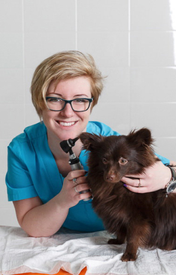

Ветеринарная дерматология домашних питомцев позволяет диагностировать и лечить любые виды кожных заболеваний. Всего же болезни кожи у животных могут возникать по разным причинам, самыми распространенными из которых являются:
- 1) наследственная предрасположенность;
- 2)укус от паразитов: блох, вшей и клещей;
- 3) аллергия на бытовую химию, лекарственные препараты, корм;
- 4)поражения бактериями либо грибками – лишай;
- 5) проблемы с обменом веществ или нарушение внутренних процессов в организме.
Как мы видим, возникновение кожных заболеваний может быть связано с множеством различных факторов. По этой причине каждому из них необходимо грамотно подобрать свой метод лечения. Делается это на основании результатов анализов, диагностики и полного профессионального осмотра питомца. Лучше всех справиться с этой задачей сможет опытный и квалифицированный ветеринар-дерматолог.
Признаки кожных заболеваний
Дерматология домашних животных выделяет различные проявления проблем с кожным покровом, которые чаще всего можно заметить при детальном визуальном осмотре своего питомца. Самыми распространенными симптомами, на которые стоит обратить внимание, являются:
- 1) зуд;
- 2)питомец постоянно чешется;
- 3) облысение отдельных участков тела;
- 4) возникновение сильного неприятного запаха;
- 5)покраснения и высыпания на коже, а также изменение ее цвета.
Кроме этого может меняться общее состояние животного: возникает беспокойство, апатия, растет температура тела. Если Вы выявили хоть один из этих симптомов, то сразу же обратитесь к специалисту. Откладывать посещение ветеринара-дерматолога не стоит, поскольку со временем болезнь может перейти в более тяжелую форму. Кроме этого, некоторые заболевания могут быть опасными для человека. Это означает, что Вам нужно своевременно исключить риск заражения.
Диагностика дерматологических заболеваний
Перед тем, как выбрать лекарственные препараты для лечения, дерматолог проводит внешний детальный осмотр, берет необходимые анализы и определяет при помощи специального современного оборудования: нужна диагностика, либо нет. В нашей ветеринарной клинике Вашим питомцам доступен самый широкий спектр обследований и анализов. К ним относятся:
- 1) исследование крови;
- 2)соскобы;
- 3)мазки;
- 4)проверка пораженных участков кожи на цитологию.
Все результаты мы получаем в собственной лаборатории.
Ветеринар-дерматолог для кошек и собак
Поставить правильный диагноз Вашему домашнему питомцу сможет только опытный специалист, который имеет за плечами огромный багаж знаний. Он с легкостью определит правильный путь лечения, и полностью проконтролирует весь процесс лечения. Помните, что заниматься самолечением запрещено, поскольку оно может нанести вред Вашему питомцу, и приведет к обратному эффекту. В нашей ветклинике Вы сможете получить полную консультацию от опытного дерматолога для кошек и собак, сдадите все необходимые анализы, пройдете полную диагностику любых кожных заболеваний.
